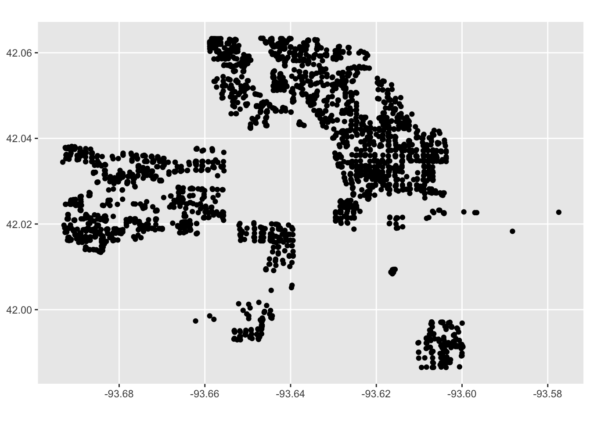
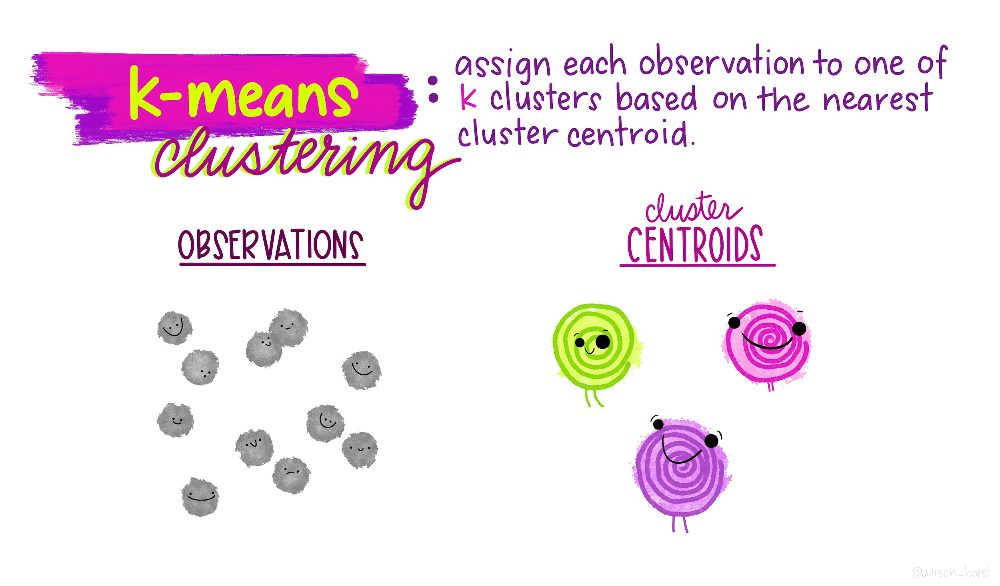
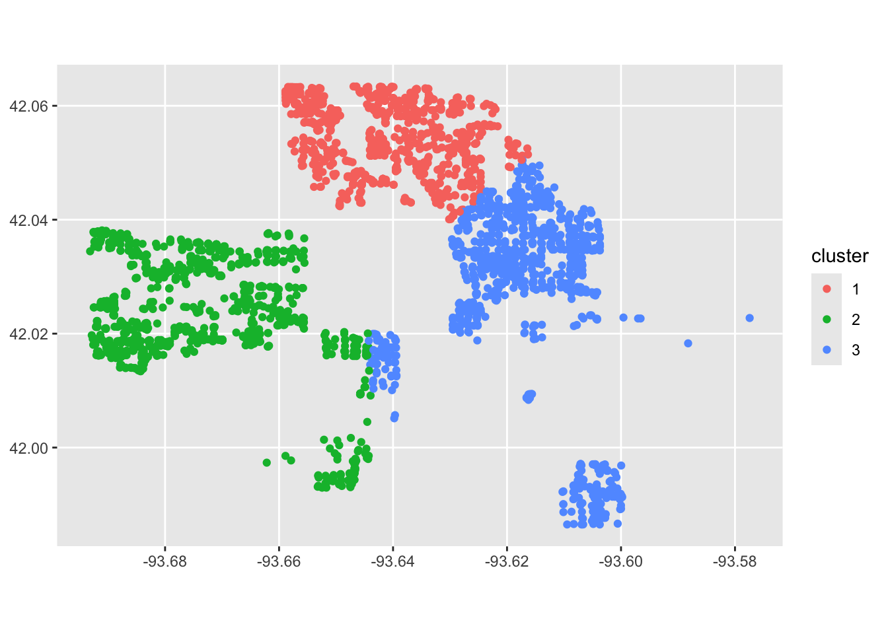
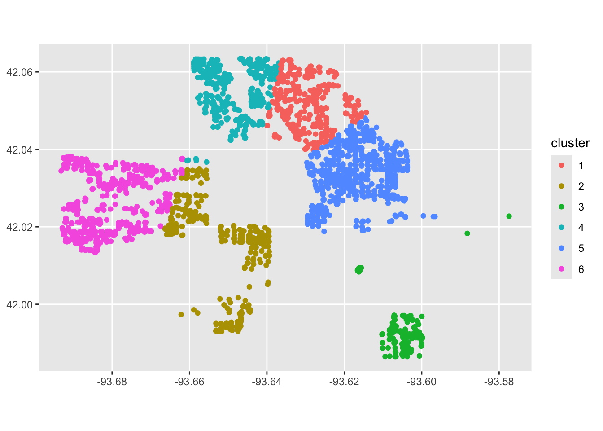
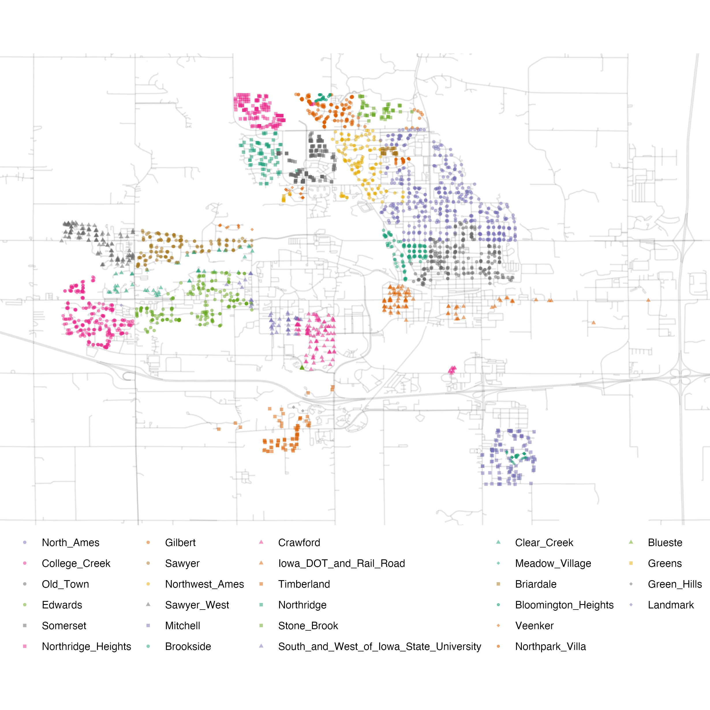
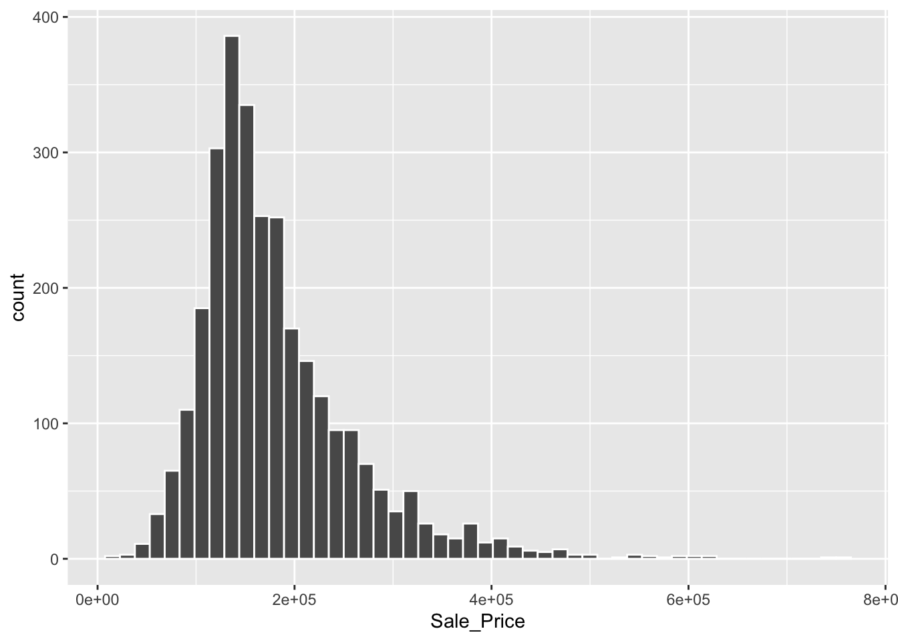
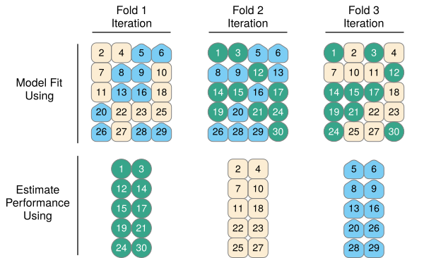

7 Predictions and Machine Learning
It’s easy to understand things that have already happened, but what about future events? A new “school” of data science, which has gained popularity in recent years, seeks not just to model relationships, but to predict outcomes. We’ll look at what this means for the social sciences.
Monday Readings:
Breiman, Leo. 2001. Statistical Science. The Two Cultures of Statistics.
Molina, Mario; Garip, Feliz. 2019. Annual Review of Sociology. Machine Learning for Sociology.
Wednesday Readings:
Optional: Bit by Bit: Social Research in the Digital Age. Running Experiments
Optional: Kiviat, Barbara. 2019. Credit Scoring in the United States.
7.1 Data Models and Algorithmic Models
We’ve now spent some time understanding how to create and work with data, how to perform descriptive statistics, visualizations and maps, and how to model outcomes. In Statistical Modeling: The Two Cultures, Breiman argues that there is a distinct division between researchers who use data models and those who use algorithmic models. We can also think about this as a division between information/explanation and prediction.
To begin, let’s think about a process of interest. As social scientists, we might be interested in a sequence of events, like what causes job loss? (The Fragile Families Challenge asked this, and other questions in a large competition - but more on this later!). We could even map out some kind of diagram, like Breiman does, where \(x\) is represents our input variables: maybe a range of employee and employer characteristics, market features, policies and local laws, economic factors, and spatial characteristics of a place. \(y\) represents whether someone lost their job or not.

Figure 7.1: Source: Breiman, 2002
Traditionally, social scientists have tried to explain these processes using what Breiman calls data models. In other words, the social scientist might run a linear regression with all our \(x\) variables (employee education, type of occupation, whether there is a recession, etc.) and use these to explain why a person lost (or didn’t lose) their job. For instance, such a model might tell us that, on average, having a high school diploma lowers the probability of job loss by 4%, working in agriculture increases the probability of job loss by 10%, and a recession increases everyone’s probability of job loss by 5%. For any individual, we can add all of these factors and arrive at a predicted probability.

Figure 7.2: Source: Breiman, 2002
Other examples, noted by Breiman, include logistic regression and Cox models (used in survival analysis). For all of these models, there is a direct, transparent relationship between the inputs (\(x\)) and the output (\(y\)).
Algorithmic models operate differently. Rather than assuming that we can explain job loss with a linear combination of variables, the algorithmic approach assumes that there is some unknown process that predicts job loss. Maybe many things have to occur at once (recession, specific industries, specific skill levels), or maybe there are certain cutoff points that are not be obvious to researchers (for example, maybe completing 2 years of college has no effect on job loss but having 3 years lowers the probability). The process by which \(y\) is predicted could be so complicated that it is nearly impossible to know why the model predicted it (as is the case in neural networks). The algorithmic modeler doesn’t necessarily care why all of these features (or combinations of features) are important - they just care that these can make better predictions than a data model.

Figure 7.3: Source: Breiman, 2002
Why does this matter? The distinctions between these two cultures - data models and algorithmic models - have grown in recent years as social scientists think about not just explaining social processes, but predicting them, and data scientists think about not just making predictions, but explaining them. We might think that in the age of AI, we could predict lots of social outcomes with ease. But we’d be wrong. The Fragile Families Challenge used an open call (recall these from Let’s “Git” Going: Code, Collaboration, and Version Controls) to see how well social scientists could predict individuals’ GPA, high school graduation, grit, job training, and experience with eviction and job loss by age 15. They had a trove of data from surveys over these individuals’ lives, with information on schooling, health, family members and economics, and more. However, overall, they were not able to predict these outcomes much better than data models (or random chance for that matter). This highlights some of the challenges that face social scientists: explaining processes, making accurate predictions, and finding truth in a world of big data.
7.2 Splitting Your Data, Setting Up Your Models
When making predictions (or evaluating any model), researchers often split their data into different sets. Let’s think about how this would work in a real dataset. The Fragile Families challenge included data on children from birth to age 9, all of which was already available to researchers. What wasn’t yet available to researchers (as of 2017), was data for these children at age 15. So the challenge split this data into three parts: training data for teams to modify their models, leaderboard data to evaluate teams’ predictions in real time, and finally, a holdout set to perform a final evaluation of the best models.

The data split raises an important question about the modeling process: how do researchers actually create their models? If you read a social science article, you might believe that researchers carefully ajudicate between all potential decisions prior to running their models, and then select the best one and present the results. This is rarely the case. New developments in social science research, such as pre-registration, are designed to prevent researchers from trying many possible models and only sharing the best ones (sometimes called p-hacking).
In Tidy Modeling With R, Kuhn and Silge recommend the following workflow for social scientists. It starts with importing data, and includes tidying (or cleaning) the data, then an interative loop between transforming, visualizing, and modeling the data resulting in some gained understanding. Finally, the research team communicates their findings.

Figure 7.4: A tidy modeling process.
Kuhn and Silge offer a second visualization for how the modeling process may look. In the figure below, the research team conducts exploratory analysis, initially “engineers features” or sets their model parameters, and then evaluates possible models, before refining them and trying the adjusted models. Ultimately, the team comes up with a “final model.”

Figure 7.5: An example modeling process.
The modeling process may look different for every research team. In most cases, there are bound to be more decisions, and more challenges, than the researchers initially anticipate. This is ok! However, because of all these decisions, researchers sometimes (intentionally or unintentionally) present only the results that look the best for their research agenda. Some have called this problem the garden of forking paths.
The “holdout” set in the Fragile Families Challenge helps to avoid issues like this. If you want to work with the Fragile Families Challenge data, you can find it here!
7.3 Unsupervised Machine Learning with K-Means Clustering
We’ll begin with the first part of Figure 7.5, Exploratory Data Analysis (EDA). We’ve done some exploratory data analysis already, through plotting and visualization. But what if we want to do some more advanced categorization of our data? For example, we might want to define categories like neighborhoods, which are based more on social histories than rigid boundaries.
To model with some real data, we return to the tidymodels package. Librarying tidymodels will automatically load datasets like the ames housing data, which describes houses in Ames, Iowa. We can load the data into our environment with data(ames).
The astute observer might notice that the ames data has Longitude and Latitude columns. Recall that we can use st_as_sf() to make this data spatial! We will need to specify the coordinates using coords.
Now that we’ve created a spatial dataset, we can plot it! Without any additional information, how would you describe the neighborhoods?

We’re going to use k-means clustering to try to identify potential neighborhoods. K-means is an unsupervised machine learning algorithm, meaning it identifies clusters from unlabeled data. We can contrast this with supervised learning, which attempts to label data correctly (for exmaple, if we had “ground truth” neighborhood labels and wanted to predict these - but more on that later!).
The basic steps to k-means are as follows:
- Pick k points (centroids) at random
- Assign all data points to closest centroid
- Re-calculate centroids, based on points in group
- Re-assign points to nearest centroid
- Repeat 3-4 until no points switch groups
These are represented much more elegently in the following illustration by Allison Horst:

Now let’s look at our clusters! We will use mutate to add a cluster column to the ames_spatial dataset, and then we will plot it again. What do you notice?
library(magrittr)
# add clusters
ames_spatial %<>%
mutate(cluster = as.character(kclust$cluster))
ggplot(ames_spatial) +
geom_sf(aes(col = cluster))
Our model is working, but it’s not perfect. That means we can jump into the next step of modeling, or feature engineering! We will try modifying our settings and see if we can come up with a better clustering algorithm. For example, maybe we want to try 6 cluster centers.
kclust <- kmeans(ames %>%
select(Longitude, Latitude), centers = 6)
# add clusters
ames_spatial %<>%
mutate(cluster = as.character(kclust$cluster))
ggplot(ames_spatial) +
geom_sf(aes(col = cluster))
Looking a bit better! We are still far from the neighborhoods identified in the ames data:

Figure 7.6: Neighborhood identifiers in Ames data.
However, by adding more features to the data, and trying different \(k\) values, we might be able to get closer to the “true” neighborhoods.
7.4 Supervised Machine Learning with Random Forests
We might be interested in creating a model that can predict housing characteristics, such as sales price. Using ggplot2, we can begin to explore the data - for example, by looking at descriptive statistics on home sale prices:
# examine ames housing data
ggplot(ames, aes(x = Sale_Price)) +
geom_histogram(bins = 50, col= "white")
Because this is a prediction task, we begin by splitting our data so that we can evaluate training and test sets. We might be concerned about some portions of the data not being represented well in our training or test data. For example, in the figure above, we can see that housing price data is skewed with a “long tail,” meaning that while most houses sell within the $50,000-$400,000 range, there are several houses that sell for much much higher values. To make sure both our training and test sets are representative among neighborhoods, we include strata = Sale_Price below.
library(tidymodels)
# before splitting, we will drop neighborhood levels with 0 observations
ames %<>%
droplevels()
ames_split <- initial_split(ames, prop = 0.80, strata = Sale_Price)
ames_train <- training(ames_split)
ames_test <- testing(ames_split)We’ve used tidymodels to create linear models (in Gathering and Modeling Data), but now we will try creating a common machine learning algorithm: the “random forest” model. To do so, we will first define our models and parameters. We will begin with a simple decision tree. Notice the parameters, such as the number of trees and minimum n value.
# create a decision tree
tree_model <-
decision_tree(min_n = 2) %>%
set_engine("rpart") %>%
set_mode("regression")
# define the tree's model fit
tree_fit <-
tree_model %>%
fit(Sale_Price ~ Longitude + Latitude + Sale_Price,
data = ames_train)
ames_test_small <- ames_test %>% slice(1:10)
# combine predictions with our data
ames_test_small %>%
select(Sale_Price) %>%
bind_cols(predict(tree_fit, ames_test_small))## # A tibble: 10 × 2
## Sale_Price .pred
## <int> <dbl>
## 1 172000 156737.
## 2 213500 210734.
## 3 185000 210734.
## 4 538000 156737.
## 5 394432 409275.
## 6 190000 210734.
## 7 142000 130155.
## 8 376162 308761.
## 9 395192 308761.
## 10 319900 308761.Our estimates are close, in some cases! Is there anything that you notice about the .pred values? There are a few repeated values, likely for houses that follow the same decision point logic. This is probably not ideal - with more trees, we might be able to use more information to differentiate these houses. We will now move on to the forest. Below, we create the random forest model, define its “workflow” (this is a modeling strategy within tidymodels), and then fit the model.
# create a random forest
rf_model <-
rand_forest(trees = 1000) %>%
set_engine("ranger") %>%
set_mode("regression")
# define the random forest workflow
rf_wflow <-
workflow() %>%
add_formula(
Sale_Price ~ Gr_Liv_Area + Year_Built + Bldg_Type + #Log_Sale_Price +
Latitude + Longitude) %>%
add_model(rf_model)
# fit the random forest model
rf_fit <- rf_wflow %>% fit(data = ames_train)We can now estimate the performance of our models! The following function takes in a model and dat (or data), and returns an output with performance metrics.
estimate_perf <- function(model, dat) {
# Capture the names of the `model` and `dat` objects
cl <- match.call()
obj_name <- as.character(cl$model)
data_name <- as.character(cl$dat)
data_name <- gsub("ames_", "", data_name)
# Estimate these metrics:
reg_metrics <- metric_set(rmse, rsq)
# output our model
output <- model %>%
predict(dat) %>%
bind_cols(dat %>% select(Sale_Price)) %>%
reg_metrics(Sale_Price, .pred) %>%
select(-.estimator) %>%
mutate(object = obj_name, data = data_name)
return(output)
}We can evaluate the performance of both the tree_fit and rf_fit. The performance metrics include “rmse” or root mean squared error (where a higher value indicates more errors) and “rsq” or \(R^2\) where a value closer to 1 indicates a better model fit. What do you notice, comparing our two models?
## # A tibble: 2 × 4
## .metric .estimate object data
## <chr> <dbl> <chr> <chr>
## 1 rmse 50250. tree_fit train
## 2 rsq 0.578 tree_fit train## # A tibble: 2 × 4
## .metric .estimate object data
## <chr> <dbl> <chr> <chr>
## 1 rmse 14435. rf_fit train
## 2 rsq 0.968 rf_fit trainNow, we can evaluate the predictions on the test set. What do you notice, comparing these to the training set performance above?
# final rf model
final_rf_res <- last_fit(rf_wflow, ames_split)
# get model metrics
collect_metrics(final_rf_res)## # A tibble: 2 × 4
## .metric .estimator .estimate .config
## <chr> <chr> <dbl> <chr>
## 1 rmse standard 36046. pre0_mod0_post0
## 2 rsq standard 0.854 pre0_mod0_post0The models perform worse on the test set because the data may have been overfitted to the training data. In other words, by relying on patterns in the training data, we may have become overconfident in our models ability to make predictions. So how can we use the training data without overfitting? One approach is to split the training data and repeatedly re-sample within the training data. This is known as cross validation.
7.5 Re-Sample Your Data with Cross Validation
With algorithmic approaches, we’ve seen some of the benefits of splitting our data to find patterns that might generalize to other parts of our data. However, what if within our training set, we were also able to fine-tune our models by looking at different slices of data? This is how cross validation works. In the figure below, we see 30 data points split into three different colors. In each of three folds (one in each column), the researcher splits the data into one section used to fit their model and one to evaluate the model’s performance. (Does this remind us of anything, like the initial split?) Then, the researcher can see what model performs well across folds, which may help us guess which models will perform well in other settings too.

Figure 7.7: Cross validation. Source: Kuhn and Silge, 2023.
To set up cross validation, we can use the vfold_cv command. We will need to a pick a number of folds, \(v\), for how many times we want our data to be cross-validated. The standard choice is 10: if a model performs well across 10 subsamples, it will probably generalize to other data too.
## # 10-fold cross-validation
## # A tibble: 10 × 2
## splits id
## <list> <chr>
## 1 <split [2107/235]> Fold01
## 2 <split [2107/235]> Fold02
## 3 <split [2108/234]> Fold03
## 4 <split [2108/234]> Fold04
## 5 <split [2108/234]> Fold05
## 6 <split [2108/234]> Fold06
## 7 <split [2108/234]> Fold07
## 8 <split [2108/234]> Fold08
## 9 <split [2108/234]> Fold09
## 10 <split [2108/234]> Fold10Now that we have our cross validation object set up, we will create a resample object with rf_wflow from before.
keep_pred <- control_resamples(save_pred = TRUE, save_workflow = TRUE)
# create resample object
rf_res <-
rf_wflow %>%
fit_resamples(resamples = ames_folds, control = keep_pred)
# look at resample object
rf_res## # Resampling results
## # 10-fold cross-validation
## # A tibble: 10 × 5
## splits id .metrics .notes .predictions
## <list> <chr> <list> <list> <list>
## 1 <split [2107/235]> Fold01 <tibble [2 × 4]> <tibble [0 × 4]> <tibble>
## 2 <split [2107/235]> Fold02 <tibble [2 × 4]> <tibble [0 × 4]> <tibble>
## 3 <split [2108/234]> Fold03 <tibble [2 × 4]> <tibble [0 × 4]> <tibble>
## 4 <split [2108/234]> Fold04 <tibble [2 × 4]> <tibble [0 × 4]> <tibble>
## 5 <split [2108/234]> Fold05 <tibble [2 × 4]> <tibble [0 × 4]> <tibble>
## 6 <split [2108/234]> Fold06 <tibble [2 × 4]> <tibble [0 × 4]> <tibble>
## 7 <split [2108/234]> Fold07 <tibble [2 × 4]> <tibble [0 × 4]> <tibble>
## 8 <split [2108/234]> Fold08 <tibble [2 × 4]> <tibble [0 × 4]> <tibble>
## 9 <split [2108/234]> Fold09 <tibble [2 × 4]> <tibble [0 × 4]> <tibble>
## 10 <split [2108/234]> Fold10 <tibble [2 × 4]> <tibble [0 × 4]> <tibble>Finally, we can measure how our model performs across the 10 folds.
## # A tibble: 2 × 6
## .metric .estimator mean n std_err .config
## <chr> <chr> <dbl> <int> <dbl> <chr>
## 1 rmse standard 30728. 10 997. pre0_mod0_post0
## 2 rsq standard 0.843 10 0.00725 pre0_mod0_post0We find that on average, our model performs similarly within the training sample during cross validation as it did in the test set earlier.
7.7 Problem Set 7
Recommended Resources:
K-means clustering with tidy data principles
Start a new document, problemset7.Rmd, in your soc10problemsets repository. (You can download a template here, but be sure to save it in your own soc10problemsets repo). Create a map of the
amesdata, but change the cluster specifications to try to get closer to the real neighborhoods shown in Figure 7.6. Describe the benefits and limitations of your approach. Commit your changes.Using the
tigrispackage, download roads data for the county of Story, IA. Add roads to your plot. Commit your changes.Try to train an algorithm to predict housing sales prices. Create a random forest to predict the sales price, using some new or different variables than the model above. Create a model that better predicts sales price, and explain why it is better. Commit your changes.
Perhaps the model could be better trained using Cross Validation. Set up a 10-fold cross validation model, and predict sales prices again. Compare these results to your prior results. Are they similar or different, and what does this mean? Commit your changes.
If a real estate company used algorithms to determine home values, could this have any societal implications? Walk the reader through why the data could induce biases and how you might try to resolve these potential problems. Commit your changes.